問題の発見
ボードゲームで遊びたいのに人が集まらない
急なボードゲームがしたい
既存サービスでは、遊ぶ相手・場所・イベントの情報を横断して探しづらく、ボードゲームを始めるまでの手間が大きいと考えました。
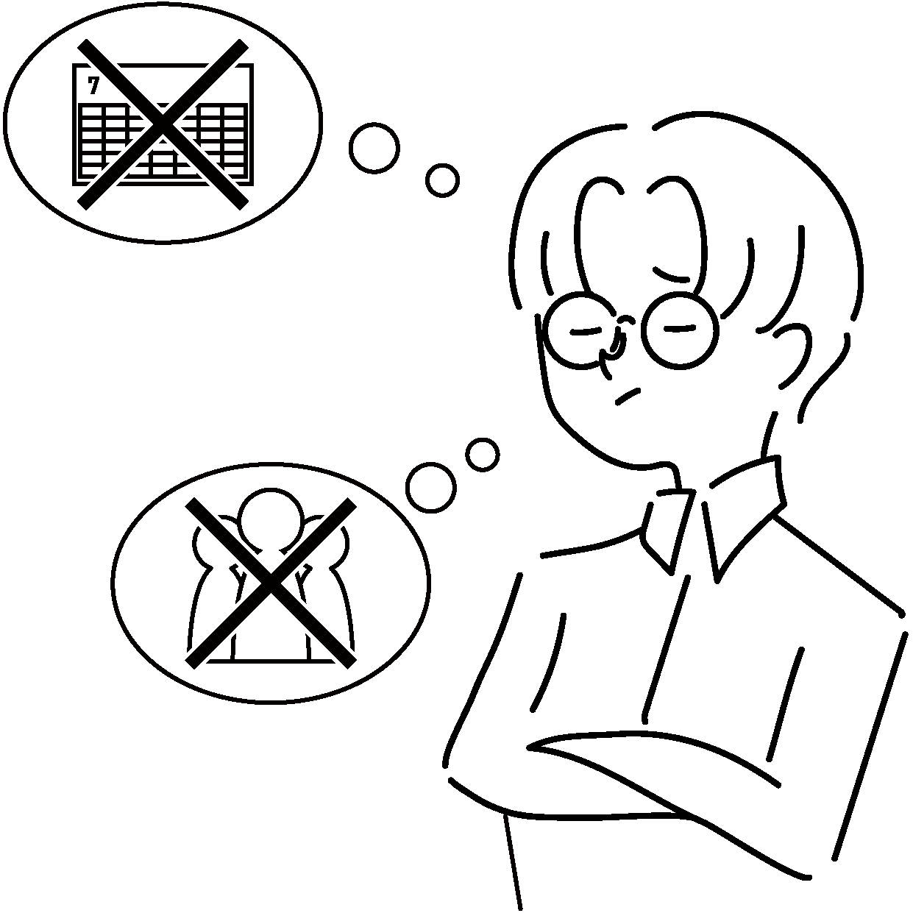
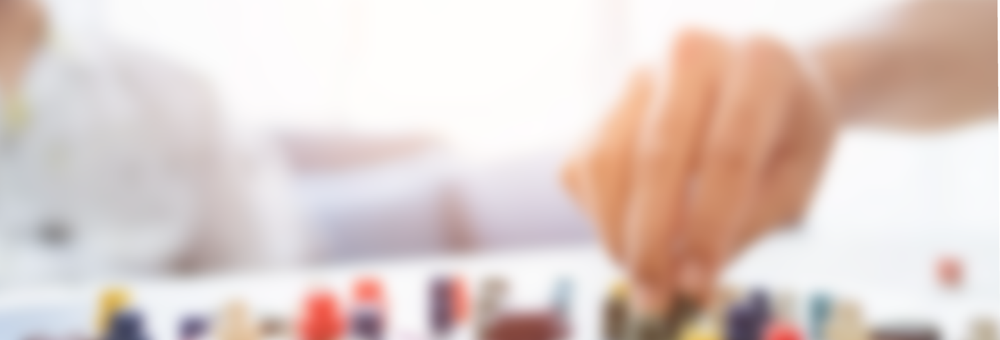
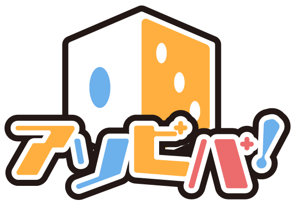
アソビバ！ってどんなサービス？
ボードゲーム一緒にやってくれる人を募集したり
新しいボードゲームを探したりできるボードゲーム特化型 SNS
アソビバ！でできること
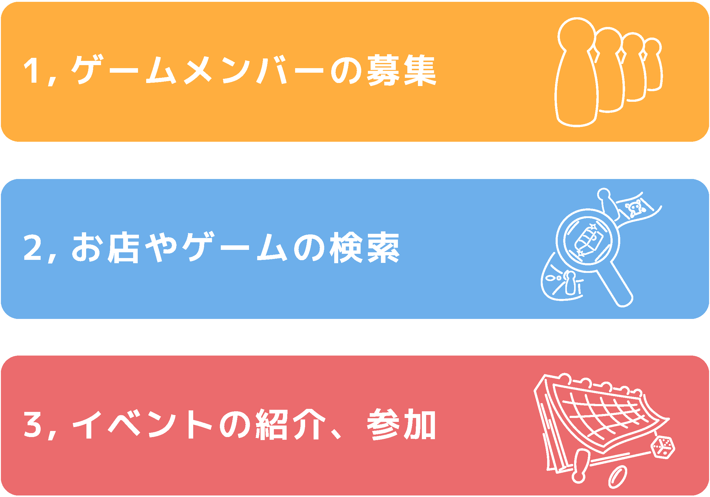
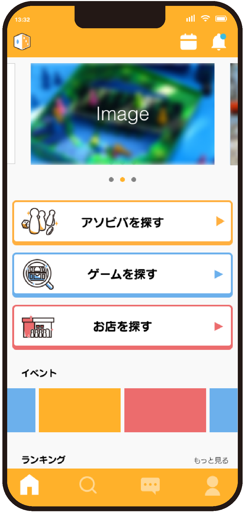
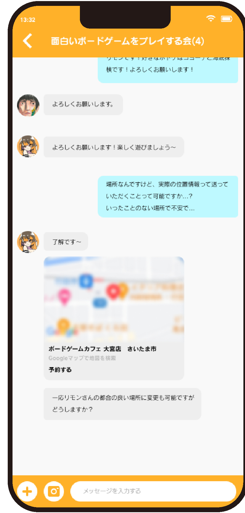
問題の発見
既存サービスでは、遊ぶ相手・場所・イベントの情報を横断して探しづらく、ボードゲームを始めるまでの手間が大きいと考えました。

解決するためには？
「一緒に遊ぶ」「場所を探す」「イベントに参加する」をひとつのサービス内で完結させ、遊び始めるまでの心理的なハードルを下げます。
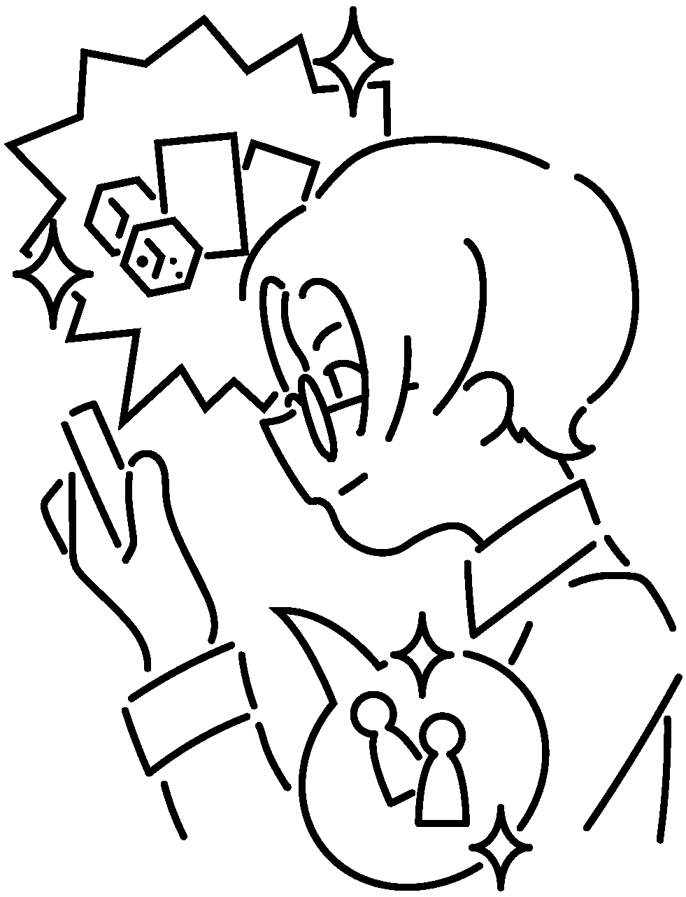
コンセプト
ターゲット
ボードゲームが好きで定期的にプレイする人
様々なボードゲームに興味がある人
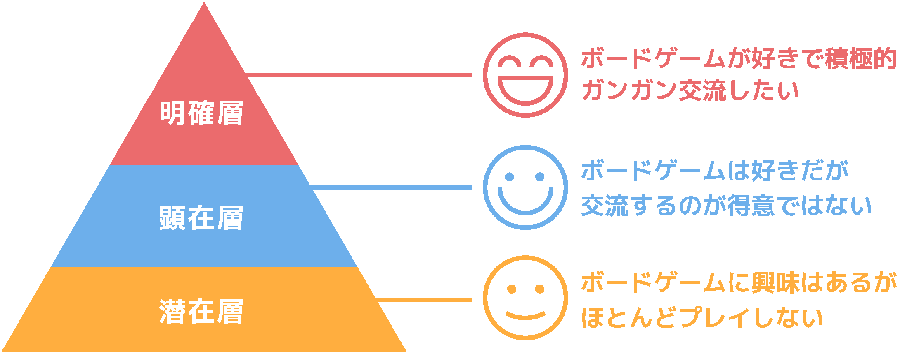
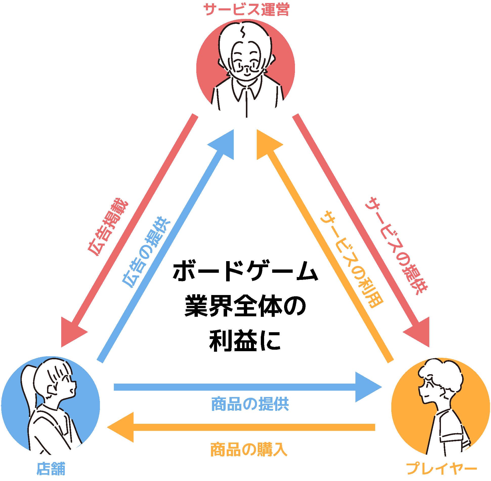
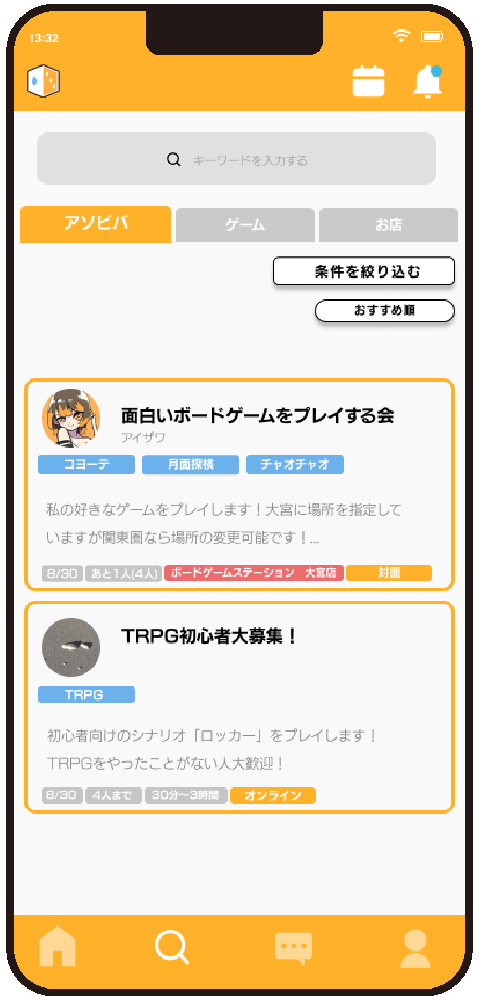
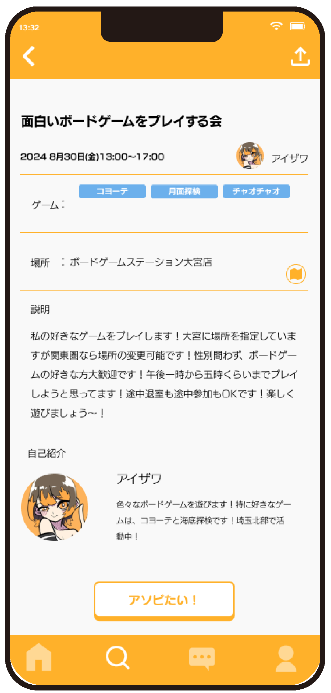
ロゴ
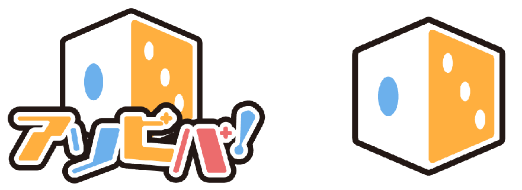
ボードゲームで多用されるサイコロを モチーフにマークにも見えるようなデザインを意識しています。 文字は素体にカラットを使用しながら メインカラーの3色で構成することによって落ち着き40%ポップさ60%くらいを 意識し制作しています。
フォント
見出しでは丸くて可愛らしい印象のあるスーラを使用し、本文などでは可読性が高く癖のないニューロダンを使用しています。
カラー
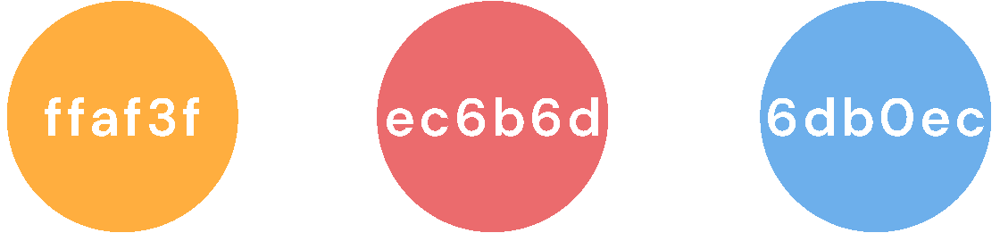
パステルカラーの彩度を調整してポップすぎない色彩にしています。 また明度に関しても視認性を損なわないために黒と合わせても白と合わせても ちょうど良いバランスにしています。
アイコン
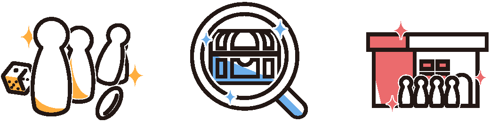
線を多用してスタイリッシュな雰囲気をベースとしながら線を太くしたり部分的にカラーを使用してスタイリッシュすぎないように しています。